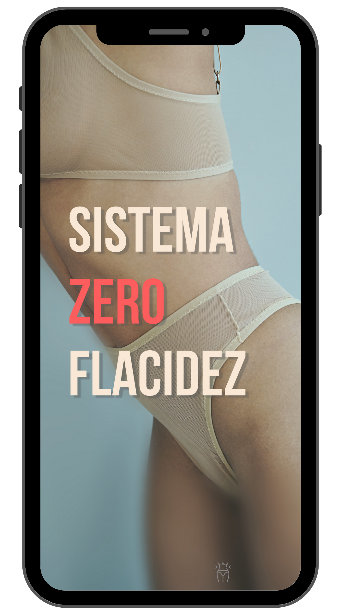

Não Feche Essa Página…
Você Será Direcionada Para Sua Área De Membros Nos Próximos 30 Segundos…
Parabéns por tomar a decisão mais inteligente que você poderia ter tomado e ter comprado o Protocolo Zero Barriga hoje.
O Protocolo Zero Barriga vai te dar tudo o que você precisa para começar a jornada que te fará mais magra, sexy e jovem como nunca antes.
Agora você sabe que para acelerar o seu metabolismo, você precisa ativar o seu tecido anti gordura.
Afinal, é ele quem realmente controla o seu peso.
Então, ter em mãos um sistema que ativa esse acelerador de metabolismo natural é a chave para emagrecer.
Eu estou super animado para ouvir sobre os seus resultados.
Mas agora que você sabe disso, eu preciso ser honesto com você.
Conforme novas pessoas entram no programa e seguem o passo a passo…
Vão surgindo algumas dúvidas. O que é normal.
Mas existe UMA ÚNICA pergunta que aparece todos os dias no meu e-mail…
E essa pergunta é…
Marcelo, eu amei o programa…
Mas existe uma maneira de remover a flacidez da pele o mais rápido possível?
E se você é como a grande maioria das minhas melhores clientes, impacientes, e que querem todos os métodos possíveis para alcançar resultados mais rápidos…
Principalmente quando elas percebem que funciona…
Então essa mensagem é diretamente pra você. Por favor, leia atentamente.
Toda mulher sabe como é difícil ser organizada e ter que pensar e preparar suas refeições, cuidar da carreira profissional, cuidar dos filhos…
E todo o peso que uma mulher ocupada de hoje em dia precisa carregar nos ombros.
E como você sabe…
Se manter no plano é essencial para continuar ativando o tecido anti gordura, perder quilos na balança… e se manter no peso ideal.
Por esse motivo, conversei com o Dr. John, e ele decidiu montar um Sistema para eliminar a flacidez do seu corpo em poucos dias...
Para que você possa simplesmente adaptar a sua rotina.
Ele elimina toda a confusão que você possa ter na hora de escolher um alimento, e também evita que seu corpo fique flácido após o seu emagrecimento…
Quem tem a barriguinha saliente, sabe como é incômodo colocar uma roupa mais justa e a barriguinha ficar atirada para fora.
A barriga saliente não é só ruim porque atrapalha nos looks, mas também é um sinal de que seu corpo está acumulando mais gordura do que deveria.
Por isso, eu apresento a vocês…
do Dr. John

O Sistema Zero Flacidez é um protocolo simples, e passo a passo, onde você vai descobrir como eliminar a flacidez nas suas áreas mais problemáticas… naturalmente!
Essa fórmula avançada foi desenvolvida para estimular a produção de colágeno e restaurar a elasticidade da pele, proporcionando resultados surpreendentes em questão de dias.
Tudo isso usando um passo a passo simples…
Que além de dar o conforto e eliminar a confusão mental
Também vai reduzir os sinais de envelhecimento, garantindo uma pele mais firme e jovem!
Algo Quase 'Mágico' Acontece...
Ao seguir estas receitas simples, além de eliminar a flacidez…
Você estará eliminando automaticamente todos os ingredientes que aceleram silenciosamente o envelhecimento em seu corpo
Ao mesmo tempo em que adiciona os ingredientes que vêm com notáveis propriedades de rejuvenescimento...
E quando você faz isso, algo quase 'mágico' acontece... e acontece RÁPIDO!
Seu corpo está sendo literalmente forçado a iniciar uma série de processos de rejuvenescimento, queima de gordura e desintoxicação.
Resultado: Você vai começar a ter uma pele mais firme e jovem instantaneamente!
E como é a sua satisfação que está em jogo aqui…
O Dr. John decidiu fazer algo muito louco…
Ele vai oferecer UMA ÚNICA vez, esse plano de eliminar a flacidez..
Esse guia não está à venda ao público. Somente para as clientes mais valiosas.
Normalmente, ele é vendido separadamente (para cada paciente do Dr. John)... por $117 dólares. O que no Brasil hoje custaria cerca de R$585.
Mas, como ele gosta de cuidar o melhor possível de suas clientes, principalmente as que deram um voto de confiança ao seu trabalho…
Hoje, e somente através desta página…
Você poderá ter o acesso completo ao Sistema Zero Flacidez do Dr. John, por apenas R$97.
O que, diante do preço normal, significa mais de 80% de desconto!
Você estará economizando mais de R$450 reais.
Se você dividir a quantidade de dias pelo valor…
Você estará pagando pouco mais de 3 reais por dia para praticamente ter o Dr. John orientando todo o seu dia, durante todo o processo.
E você ainda poderá ficar com o plano para sempre, se quiser.
Isso não é emocionante?
E não é só isso.
Você também estará protegida pela garantia blindada de 7 dias do Dr. John.
Funciona assim…
Use, e abuse do seu plano de eliminar a flacidez por 7 longos dias.
Se por qualquer motivo, você achar que esse plano não encaixa na sua rotina, ou se você considerar que ele não prova os resultados visivelmente, e não te dão mais conforto enquanto você passa pelo processo…
Então o Dr. John insiste que você receba todo o seu dinheiro de volta. Sem perguntas, ou pegadinhas.
Basta enviar um e-mail para nossa equipe, e você será reembolsada o mais rápido possível.
E como agradecimento, você ainda pode ficar com o plano para você usar em algum outro momento.
Mais uma vez, essa é uma oportunidade única e você não tem absolutamente nada a perder aqui.
Este é o método que o Dr. John usa pessoalmente com suas pacientes, para se manterem magras e sem flacidez..
Estas não são receitas 'chatas'... não, você encontrará substitutos 100% sem "sem culpa" para alguns dos alimentos mais gordurosos e não saudáveis por aí... incluindo pizza, panquecas, sim até mesmo bolo de chocolate "que derrete na boca"... e muitos mais.
Mas lembre-se, esta é a única vez que você verá esta oferta e se você decidir não aceitá-la… ela desaparecerá para sempre.
R$97
Com o menor preço já disponível.
R$585